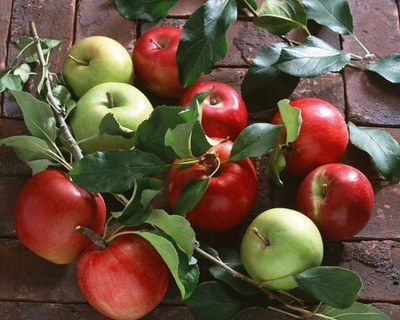

Apples سیب
Content

Seasonal activities: Winter
(mid December through mid March)
- Spray trees with dormant oil to control San Jose scale, aphid eggs, mite eggs.
- Prune 15–20% last year’s growth to let light in.
- Remove diseased/broken limbs.
Problems and Opportunities
- Priority problems include: production problems due to poor rootstock, pollination, planting (bed preparation), training and pruning, variety selection, and IPM for Apples: Codling moth, powdery mildew, apple scab, fire blight, wholly apple aphid, San Jose scale, green fruit worm, European red mite, green apple aphids, Bermuda grass.
- Priority opportunities include training nurserymen in improved rootstock management, better match varieties with growing regions (See PHDP), and improved water management.
- These draft priority problems are based on feedback from agricultural consultants, Afghans specialists, and Tom Brown.
Overview
- About Apples Fact Sheet English, (Dari) دری , and پشتو (Pashto) (UC Davis)
- Apple production by province Interactive Map (UC Davis)
- Cultivated Area by Province Interactive Map (UC Davis)
Crop Calendar
- Apple Crop Calendar Fact Sheet (California Backyard Gardener)
- For crop calendars of specific regions, choose a province from the list on the left or go to the Province Info page on the top menu bar
Production
- Apple production manual English (1 MB) and پشتو (Pashto) (Roots of Peace)
- General orchard manual English (1.2 MB) and پشتو (Pashto) (1 MB) (Roots of Peace)
- Varieties
- For certified saplings: Contact PHDP (Perennial Horticulture Development Project)
- PHDP Varietal Selection and Production English (excerpt), دری (Dari) (9.9 MB) and پشتو (Pashto) (9.8 MB) (ANNGO Catalog 2013, PHDP/EU)
- National Nursery Growers
- Association Locations and Contacts PDF (ANNGO Catalog 2013, PHDP/EU)
- Major European varieties PPT as PDF (3 MB)
- Intercropping Fact sheet (UC Davis)
- Fruit Tree Thinning Fact Sheet (UC Davis) and VideoEnglish/ پشتو (Pashto) (10.8 MB) (ANHDO)
- Pruning Manual پشتو (Pashto)
- Water management
- Irrigation of Perennial Crops Manual (3.4 MB) (Roots of Peace)
- Principals of Irrigation Trees and Vines PPT as PDF English (2.8MB) and (Dari) دری (4.6 MB) (UC Davis)
- Drip irrigation Manual (11.7MB) (IDE)
- Pollination (example using Almond) Fact Sheet (UC Davis)
- Case Study (2008) (AFK)
- Production by Province Interactive Map (UC Davis)
- Cultivated Area by Province Interactive Map (UC Davis)
Pest Management for Apples
- See Pest Identification Cards and general Pest Management Page
- Nursery Weed Management Fact Sheet English and (Dari) دری (UC Davis for Roots of Peace)
Postharvest
- 10 Principles of Postharvest Management Fact Sheet (UC Davis)
- Principles of GAP (Good Agricultural Practices) Fact Sheet (UC Davis)
- Apple Postharvest Management Fact Sheet (UC Davis PostHarvest RIC)
- General Postharvest Page